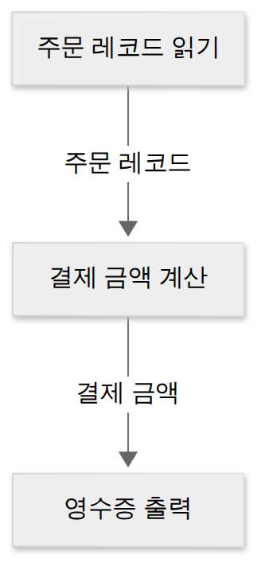
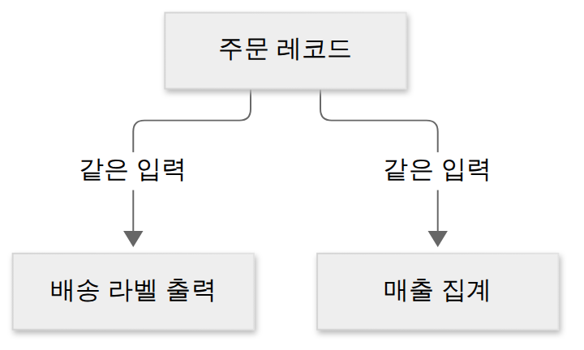
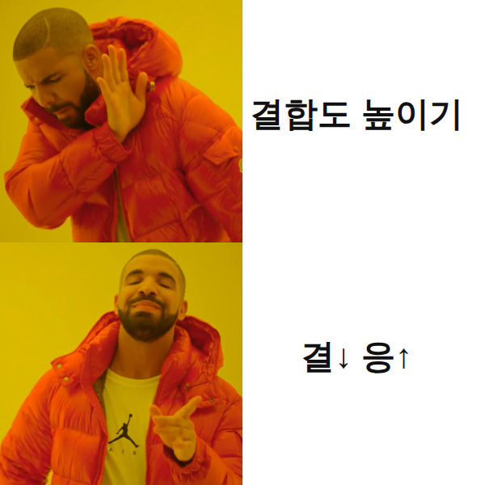
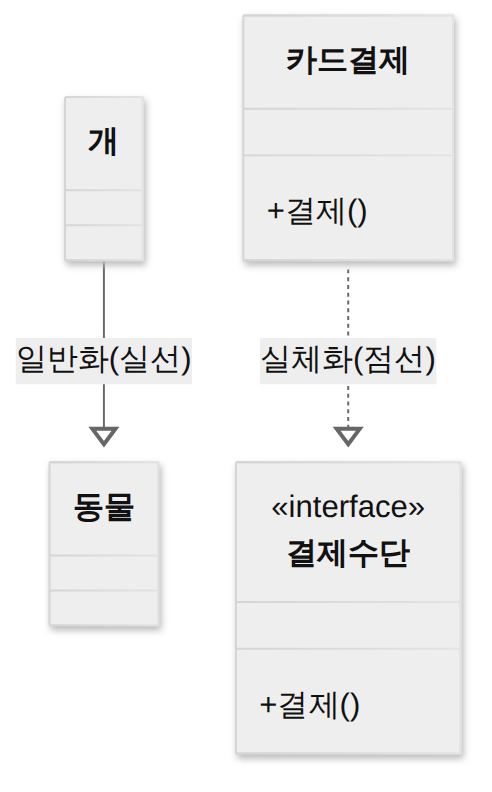

D012 · 재사용·모듈화·결합도·응집도 — fan-in/out과 6·7단계 순서
A3 어제 설계 원리 첫째가 모듈화였어요. 그런데 “잘 나눴다”는 건 어떻게 판단할까요? 오늘은 그 판단 기준인 두 개의 자, 결합도와 응집도를 봐요. 앞에는 왜 나누는지(재사용·모듈화), 뒤에는 나눈 구조를 숫자로 세는 법(fan-in·fan-out)이 붙어요. 결합도·응집도 순서 문제는 필기에서 거의 매회 나오는 A3 최빈출이에요.
- 재사용의 정의, 범위 3단계(함수·객체 → 컴포넌트 → 애플리케이션), 방법 2가지(합성 중심 / 생성 중심)를 구별하고, 3R(역공학·재공학·재사용)의 관계를 설명할 수 있다
- 모듈화의 목적과 모듈 독립성 기준(결합도↓ · 응집도↑ · 적당한 크기)을 설명하고, 구조도에서 fan-in / fan-out을 셀 수 있다
- 결합도 6종을 약한 것부터(자료 < 스탬프 < 제어 < 외부 < 공통 < 내용) 나열하고 코드 단서로 구별할 수 있다
- 응집도 7종을 강한 것부터(기능 > 순차 > 교환 > 절차 > 시간 > 논리 > 우연) 나열하고, 특히 순차·교환·절차·시간을 상황으로 구별할 수 있다
- 좋은 방향(결합도는 낮게, 응집도는 높게)과 순서 문제의 방향 뒤집기 함정을 피할 수 있다
1. A3 지도 — 오늘 위치
2. 재사용 — 이미 검증된 것을 다시 쓰기
어제 본 아키텍처 품질 속성 중 비즈니스 측면에 비용과 시장 적시성이 있었죠. 매번 처음부터 만들면 둘 다 나빠져요. 1960~70년대 “소프트웨어 위기” 때 개발 비용과 일정이 계속 늘어나자, 하드웨어처럼 이미 만들어 검증한 부품을 다시 끼워 쓰자는 생각이 힘을 얻었어요. 이게 재사용이에요.
재사용으로 얻는 건 분명해요. 개발 기간과 비용이 줄고, 이미 운영에서 검증된 코드라 품질과 신뢰성이 올라가요. 대가도 있어요. 다시 쓸 수 있게 만들려면 처음에 더 일반적으로 설계해야 해서 초기 비용이 들고, 부품을 고르고 이해하는 비용, 새 시스템에 맞게 고치는 비용이 따라와요. 그리고 다시 쓰려면 그 부품이 다른 코드와 덜 얽혀 있어야 하는데, 이 조건이 바로 뒤에서 볼 모듈화·결합도·응집도예요.
재사용 범위 3단계
무엇을 다시 쓰느냐에 따라 크기가 세 단계로 나뉘어요. 가장 작은 단위는 함수와 객체예요. 날짜 포맷 함수나 금액 반올림 클래스처럼 클래스·메서드 수준에서 다시 쓰는 거예요. 그다음은 컴포넌트예요. 결제 모듈·인증 모듈처럼 여러 클래스가 묶인 독립 부품을, 내부를 고치지 않고 정해진 인터페이스로 가져다 써요. 가장 큰 단위는 애플리케이션이에요. 한 고객사에 만든 쇼핑몰 솔루션을 다른 고객사에 거의 그대로 설치하는 것처럼, 같은 종류의 애플리케이션을 공유하는 방식이에요.
재사용 방법 2가지 — 합성 중심 vs 생성 중심
합성 중심(Composition-based)은 미리 만들어 둔 부품(모듈)을 끼워 맞춰 시스템을 완성하는 방법이에요. 전자 칩을 기판에 꽂아 회로를 만드는 것과 같아서 블록 구성 방법이라고도 불러요. npm·Maven에서 라이브러리를 받아 조립하는 일이 현업에서 가장 흔한 모습이에요.
생성 중심(Generation-based)은 부품 자체가 아니라 추상화된 명세를 재사용하고, 그 명세를 구체화해서 프로그램을 만들어 내는 방법이에요. OpenAPI 명세로 클라이언트 코드를 생성하거나, 템플릿·코드 생성기로 CRUD 코드를 찍어 내는 것이 비슷한 감각이에요. 둘의 차이는 “완성된 부품을 끼우나(합성) vs 설계 명세에서 코드를 뽑아내나(생성)”예요.
3R — 역공학 · 재공학 · 재사용
재사용은 혼자 나오지 않고 3R이라는 묶음으로 나와요. 이미 있는 시스템을 버리지 않고 살려 쓰려는 세 가지 활동이에요. 역공학(Reverse Engineering)은 기존 코드·데이터를 분석해 설계서·명세를 거꾸로 뽑아내는 거예요. 문서 없는 레거시 코드에서 ERD나 클래스 다이어그램을 추출하는 게 대표 예이고, D005에서 본 CASE 도구가 이 일을 자동으로 도와요. 재공학(Re-engineering)은 기존 시스템을 새로 만드는 대신, 분석해서 구조를 다시 짜고 새 기술·표준에 맞게 고쳐 유지보수성을 높이는 거예요. 재공학 과정 안에 역공학이 들어간다고 기억하면 관계가 정리돼요.
| 구분 | 하는 일 | 현업 감각 |
|---|---|---|
| 역공학 | 기존 코드·데이터 → 설계서·명세를 거꾸로 추출 | 레거시 DB에서 ERD 뽑기 |
| 재공학 | 기존 시스템을 분석해 구조를 개선·재구성, 유지보수성↑ | 모놀리스를 정리해 새 프레임워크로 옮기기 |
| 재사용 | 검증된 SW의 전체·일부를 새 개발에 다시 사용 | 사내 공통 라이브러리 가져다 쓰기 |
3. 모듈화와 모듈 독립성
재사용하려면 떼어 낼 수 있는 단위가 있어야 해요. 그 단위를 만드는 일이 어제 설계 원리에서 본 모듈화예요. 모듈은 하나의 기능을 수행하는, 독립적으로 컴파일·테스트·재사용할 수 있는 단위예요. 자바의 클래스·패키지, 서비스 하나가 모두 모듈로 볼 수 있어요.
모듈화를 하면 얻는 게 많아요. 한 모듈만 이해하고 고치면 되니 복잡도가 줄고 유지보수가 쉬워져요. 모듈 단위로 사람을 나눠 병행 개발할 수 있고, 모듈마다 따로 테스트하기 쉬우며, 다른 시스템에서 재사용할 수 있어요. 다만 어제 본 것처럼 너무 잘게 나누면 모듈끼리 연결·통합하는 비용이 커지고, 너무 크게 나누면 모듈 하나가 비대해져요.
그러면 “잘 나눈 모듈”이란 무엇일까요? 시험은 이것을 모듈 독립성이라고 불러요. 다른 모듈과 덜 얽혀 있고, 자기 일 하나에 집중할수록 독립적이에요. 그래서 독립성은 두 개의 자로 재요. 모듈 사이의 의존 정도를 재는 결합도(Coupling), 모듈 안 요소들이 한 목적으로 뭉친 정도를 재는 응집도(Cohesion)예요. 둘은 1970년대 구조적 설계에서 Constantine 등이 정리한 개념이에요.
그래서 설계 지침은 한 줄로 “결합도는 낮추고 응집도는 높인다”예요. 여기에 모듈 크기를 적당히 유지하고, 입구·출구를 하나씩 두며(단일 입구·단일 출구), 어제 본 정보 은닉으로 내부를 감추는 것이 함께 나와요. 정보 은닉이 결합도를 낮추는 가장 기본 수단이라는 연결도 기억해 두세요.
※ 참고: 여러 시스템이 공통으로 쓰는 기능을 모은 것이 공통 모듈이고, 그 명세는 정확성·명확성·완전성·일관성·추적성 원칙(정명완일추)을 따른다고 소개돼요(D010 2번 문항). 이번에 확인한 자료 중 한 곳에만 다시 정리돼 있어 오늘 문항은 내지 않았어요.
4. Fan-in / Fan-out — 구조도에서 세는 법
결합도·응집도가 모듈 하나하나의 품질이라면, fan-in·fan-out은 모듈들이 서로 부르는 구조를 숫자로 보는 방법이에요. 모듈 구조도(호출 관계를 위에서 아래로 그린 그림)에서 셉니다.
Fan-in은 어떤 모듈을 호출하는 상위 모듈의 수, 즉 “나를 부르는 쪽이 몇 개인가”예요. fan-in이 높다는 건 여러 곳에서 그 모듈을 쓰고 있다는 뜻이라 재사용이 잘 되고 있다는 신호예요. 공통 모듈은 원래 여러 곳에서 쓰라고 만든 것이니 fan-in이 높은 게 정상이에요. 대신 많은 곳이 기대고 있어서, 이 모듈에 버그가 있으면 영향이 넓게 퍼지므로 더 꼼꼼히 테스트해야 해요.
Fan-out은 어떤 모듈이 호출하는 하위 모듈의 수, 즉 “내가 부르는 쪽이 몇 개인가”예요. fan-out이 높으면 그 모듈은 여러 하위 모듈에 의존하고 있어서 하위 하나만 바뀌어도 영향을 받고, 흐름을 이해하기도 어려워져요. 그래서 일반적으로 fan-out은 줄이는 것이 좋아요. 정리하면 “공통 모듈은 fan-in↑, fan-out↓”가 바람직한 구조예요.
세는 요령은 하나예요. 그 모듈로 들어오는 화살표를 세면 fan-in, 그 모듈에서 나가는 화살표를 세면 fan-out이에요. 시험에서는 구조도를 주고 특정 모듈의 fan-in·fan-out을 묻거나, “fan-in이 2 이상인 모듈을 모두 고르라”는 식으로 나와요. 위 그림에서 직접 세어 보세요. X·Y는 fan-in 1, fan-out 0이에요.
5. 결합도 6종 — 모듈 사이가 얼마나 얽혔나
이제 첫 번째 자, 결합도예요. 결합도는 모듈과 모듈 사이의 상호 의존 정도예요. 한 모듈을 고쳤을 때 다른 모듈도 같이 고쳐야 할 가능성이 클수록 결합도가 높아요. 결합도가 높으면 변경이 연쇄적으로 번지고(파급 효과), 따로 테스트하거나 재사용하기 어려워져요. 그래서 낮을수록 좋아요.
결합도는 “모듈끼리 무엇을 주고받거나 공유하는가”로 6단계를 나눠요. 주고받는 게 단순한 값일수록 약하고, 상대의 흐름을 지시하거나 같은 전역 데이터를 함께 쓰거나 상대 내부에 손을 넣을수록 강해요. 약한 것부터 하나씩 봐요. 예시 코드는 TypeScript로 썼어요.
① 자료 결합도 (Data Coupling) — 가장 약함
모듈 사이에 필요한 자료 요소(값)만 매개변수로 주고받는 경우예요. 호출되는 모듈은 받은 값으로 계산만 하고, 호출한 쪽의 내부 사정을 전혀 몰라도 돼요. 인터페이스가 가장 단순해서 가장 바람직한 결합이에요.
// 필요한 값 두 개만 받음
function area(w: number, h: number) {
return w * h;
}
② 스탬프 결합도 (Stamp Coupling)
배열·레코드·객체 같은 자료 구조를 통째로 넘기는 경우예요. 받는 쪽은 그중 일부만 쓰는데도 구조 전체를 받으니, 그 자료 구조의 형태가 바뀌면(필드 이름 변경 등) 실제로 쓰지 않는 모듈까지 영향을 받을 수 있어요. 현업에서 엔티티 객체를 통째로 넘기는 흔한 패턴이 여기에 해당해요.
// 주소만 쓰는데 주문 객체 전체를 받음
function printLabel(order: Order) {
console.log(order.address);
}
③ 제어 결합도 (Control Coupling)
값이 아니라 제어 플래그(제어 요소)를 넘겨서, 받는 모듈의 내부 처리 흐름을 바꾸는 경우예요. 호출하는 쪽이 “이 모드로 처리해”라고 상대 내부 논리를 지시하는 셈이라, 호출하는 쪽이 받는 쪽의 내부를 알아야 해요. 제어 신호가 거꾸로 하위 모듈에서 상위 모듈로 올라가 하위가 상위에게 처리를 지시하게 되면, 위아래 권한이 뒤집혔다는 뜻으로 권리 전도 현상이라고 불러요. 시험 보기에는 이 표현이 제어 결합도의 단서로 자주 나와요.
// 넘겨준 플래그가 내부 분기를 결정
type Mode = "pdf" | "html";
function render(d: Data, mode: Mode) {
if (mode === "pdf") { /* PDF */ }
else { /* HTML */ }
}
④ 외부 결합도 (External Coupling)
모듈들이 모듈 밖에서 정해진 것에 함께 의존하는 경우예요. 이 단계는 자료마다 설명이 두 갈래예요. 한쪽은 외부에서 정한 데이터 포맷·통신 프로토콜·장치 인터페이스를 여러 모듈이 공유하는 것이라고 하고(예: 두 모듈이 같은 외부 CSV 파일 형식에 맞춰 읽고 씀), 다른 쪽은 어떤 모듈에서 선언한 데이터(변수)를 외부의 다른 모듈이 참조하는 것이라고 해요. 어느 설명이든 순서상 위치는 같아요. 제어 결합도보다 강하고 공통 결합도보다 약해요.
// 외부 파일 형식 "이름,금액,날짜"에
// 두 모듈이 함께 의존
// → 형식이 바뀌면 둘 다 수정
writeCsv("sales.csv", rows); // 모듈 A
readCsv("sales.csv"); // 모듈 B
⑤ 공통 결합도 (Common Coupling)
여러 모듈이 공유 데이터 영역, 즉 전역 변수를 함께 읽고 쓰는 경우예요. 누가 언제 값을 바꿨는지 추적하기 어렵고, 전역 변수 하나를 바꾸면 그것을 쓰는 모든 모듈을 확인해야 해요. “어디서 이 값이 바뀌었지?” 하며 디버깅하던 경험이 바로 이 단계의 대가예요.
// 전역 공유 객체
export const config = { taxRate: 0.1 };
// 모듈 A
config.taxRate = 0.2;
// 모듈 B
const tax = price * config.taxRate;
⑥ 내용 결합도 (Content Coupling) — 가장 강함
한 모듈이 다른 모듈의 내부 기능이나 내부 자료를 직접 참조·수정하는 경우예요. 인터페이스를 거치지 않고 상대의 private 필드를 바꾸거나 상대 코드 중간으로 분기해 들어가는 식이에요. 정보 은닉이 완전히 깨진 상태라, 상대 모듈 내부 구현이 조금만 바뀌어도 바로 깨져요.
// 타입 검사를 우회해 // 다른 클래스의 private 필드를 직접 수정 (cart as any)._items.length = 0;
한 장 요약 — 위 여섯 단계를 사다리로 세우면 이래요. 위로 갈수록 약하고 좋아요.
| 결합도 | 주고받는 것 · 단서 | 코드 냄새 |
|---|---|---|
| 자료 | 필요한 값(자료 요소)만 매개변수로 | 없음 — 목표 상태 |
| 스탬프 | 배열·레코드·객체 등 자료 구조 통째 | 일부 필드만 쓰는데 엔티티 전체를 받음 |
| 제어 | 플래그로 상대 내부 흐름 지시, 권리 전도 | mode·type 인자로 내부 if 분기 |
| 외부 | 외부 포맷·프로토콜·장치, 또는 다른 모듈이 선언한 데이터 참조 | 같은 파일 형식에 여러 모듈이 묶임 |
| 공통 | 전역 변수(공유 데이터 영역) | “이 값 누가 바꿨지?” |
| 내용 | 상대 내부 자료·코드를 직접 참조·수정 | 남의 private 필드 직접 수정 |
6. 응집도 7종 — 모듈 안이 얼마나 한 목적으로 뭉쳤나
결합도가 모듈 사이를 봤다면, 두 번째 자인 응집도는 모듈 안을 봐요. 응집도는 모듈 내부 요소들이 서로 얼마나 관련되어 하나의 목적을 위해 뭉쳐 있는지의 정도예요. 응집도가 높으면 모듈이 하는 일이 분명해서 이름 짓기·이해·수정·재사용이 쉬워요. 응집도가 낮으면 상관없는 일이 한 모듈에 섞여 있어서 한 기능을 고치다 엉뚱한 기능이 깨져요. 그래서 높을수록 좋아요.
응집도 7단계는 “모듈 안 요소들이 왜 같은 모듈에 들어 있나”라는 묶인 이유로 나눠요. 아래는 모두 같은 쇼핑몰 주문 처리 시스템 안의 예로 들게요. 좋은 것(강한 것)부터 봐요.
① 기능적 응집도 (Functional) — 가장 강함
모듈 안의 모든 요소가 단 하나의 기능을 수행하는 데 함께 기여하는 경우예요. 예를 들어 calcDiscount() 모듈은 쿠폰·등급을 받아 할인 금액 하나를 계산하는 일만 해요. 무엇을 하는 모듈인지 한 문장(동사 + 목적어 하나)으로 설명된다면 기능적 응집도예요.
② 순차적 응집도 (Sequential)
모듈 안에서 한 활동의 출력 데이터가 다음 활동의 입력으로 쓰이는 경우예요. 주문 레코드를 읽고 → 그 레코드로 결제 금액을 계산하고 → 계산된 금액으로 영수증을 출력하는 모듈이 예예요. 리눅스 파이프(cat | grep | sort)나 조립 라인처럼 데이터가 다음 단계로 흘러가요. 기능 하나보다 넓지만 단계끼리 데이터로 강하게 이어져 있어서 꽤 좋은 편이에요.
③ 교환적 응집도 (Communicational) = 통신적 응집도
모듈 안 요소들이 같은 입력 데이터(또는 같은 출력 데이터)를 사용하지만, 각자 서로 다른 기능을 하는 경우예요. 같은 주문 레코드를 가지고 한쪽은 배송 라벨을 출력하고, 다른 쪽은 매출을 집계하는 모듈이 예예요. 같은 데이터를 쓴다는 이유로 묶였을 뿐 두 작업 사이에 데이터가 흐르지는 않아요. 번역에 따라 교환적 또는 통신적이라고 부르는데 같은 단계예요.
순차와 교환은 그림으로 보면 바로 구별돼요. 순차는 데이터가 한 줄로 이어지고, 교환은 같은 데이터에서 갈라져요.
순차적 — 앞 단계의 출력이 다음 단계의 입력이에요.

교환적(통신적) — 같은 입력을 두 작업이 따로 써요.

④ 절차적 응집도 (Procedural)
모듈 안 요소들이 정해진 순서대로 실행된다는 이유로 묶였지만, 단계끼리 데이터를 주고받지는 않는 경우예요. “로그인 권한 확인 → 주문 화면 열기 → 방문 통계 기록”처럼 순서는 정해져 있지만 각 단계가 쓰는 데이터는 따로예요. 순차적 응집도와 헷갈리는데, 순서만 같으면 절차, 데이터까지 이어지면 순차예요.
⑤ 시간적 응집도 (Temporal)
서로 관련 없는 기능들이 같은 시점에 실행된다는 이유만으로 묶인 경우예요. 앱이 시작될 때 실행하는 init() 안에 로그 설정·캐시 비우기·설정 파일 읽기가 함께 들어 있는 것, 종료할 때 파일 닫기·연결 해제·알림 보내기를 모아 둔 것이 대표 예예요. 절차적 응집도와 차이는 순서가 중요한가(절차) vs 시점만 같은가(시간)예요.
⑥ 논리적 응집도 (Logical)
하는 일이 비슷한 종류라는 이유로 묶어 두고, 그때그때 플래그로 하나를 골라 실행하는 경우예요. 키보드·마우스·터치 입력 처리를 handleInput(type) 하나에 모아 type으로 분기하는 식이에요. 논리적으로 비슷해 보일 뿐 실제로는 서로 다른 기능이 들어 있어요. 이런 모듈을 부르는 쪽은 플래그를 넘겨야 하니 앞에서 본 제어 결합도와 자주 같이 나타나요.
⑦ 우연적 응집도 (Coincidental) — 가장 약함
모듈 안 요소들 사이에 아무 의미 있는 관련이 없는 경우예요. 갈 곳 없는 함수들을 모아 둔 utils.ts·CommonHelper 클래스에 날짜 포맷, 이메일 검증, 배열 셔플이 함께 들어 있는 모습이에요. 이유 없이 같이 있으니 이름도 붙이기 어렵고, 재사용하려면 필요 없는 것까지 딸려 와요.
한 장 요약 — 일곱 단계를 같은 사다리로 세우면 이래요. 결합도와 반대로 위가 강하고 좋아요.
| 응집도 | 왜 같이 있나 | 구별 단서 |
|---|---|---|
| 기능적 | 단 하나의 기능에 모두 기여 | 한 문장으로 설명됨 |
| 순차적 | 앞 활동의 출력이 다음 입력 | 데이터가 흐름 (파이프) |
| 교환적 (통신적) | 같은 입력·출력을 쓰는 서로 다른 기능 | 같은 데이터에서 갈라짐 |
| 절차적 | 정해진 순서로 실행 | 순서만, 데이터는 따로 |
| 시간적 | 같은 시점에 실행 | 시점만 같음 (init·종료 처리) |
| 논리적 | 비슷한 종류라서 | 플래그로 하나 골라 실행 |
| 우연적 | 이유 없음 | utils 잡동사니 |
7. 결합도 · 응집도 한 장 정리
두 자를 나란히 놓으면 헷갈리는 지점이 보여요. 결합도는 모듈 사이, 응집도는 모듈 안을 재고, 좋은 방향이 서로 반대예요(결합도는 낮게, 응집도는 높게). 그래서 순서 문제에서 “강한 것부터 / 약한 것부터”, “좋은 것부터 / 나쁜 것부터”를 바꿔 묻는 함정이 가장 많이 나와요. 시험장에서는 문제의 방향 단어부터 동그라미 치세요.
8. ㅋㅋ 외우기
설명을 다 읽었으면 이제 웃으면서 굳혀요.
utils.ts에 “그냥 같은 파일에 있어서 같이 있음”… 이게 맞나?
9. 시험 포인트 정리
- 모듈 독립성 = 결합도↓ · 응집도↑ (+ 적당한 모듈 크기, 정보 은닉)
- 결합도 약 → 강: 자료 < 스탬프 < 제어 < 외부 < 공통 < 내용
- 응집도 강 → 약: 기능 > 순차 > 교환(통신) > 절차 > 시간 > 논리 > 우연
- 단서 짝: 값만 → 자료, 자료 구조 통째 → 스탬프, 플래그 → 제어, 전역 변수 → 공통, 내부 직접 참조 → 내용
- 출력 → 입력 → 순차, 같은 입력·출력 → 교환, 순서만 → 절차, 같은 시점 → 시간, 플래그로 골라 실행 → 논리
- fan-in = 나를 부르는 상위 수(재사용↑), fan-out = 내가 부르는 하위 수. 공통 모듈은 fan-in↑ fan-out↓
- 재사용 범위 = 함수·객체 / 컴포넌트 / 애플리케이션, 방법 = 합성 중심(블록 조립) / 생성 중심(명세 구체화)
- 3R = 역공학(코드 → 설계 추출) · 재공학(기존 시스템 개선·재구성) · 재사용
10. 오답 복습 — 여섯 건 다시 보기
오늘은 재확인 예정일이 겹친 오답이 여섯 개예요. 새 내용 사이에 끼워 넣기보다 여기서 한 번에 정리하고, 확인 문제 3~8번으로 다시 풀어요.
D004-1 · 럼바우 OMT 세 모델과 도구 (D+7)
럼바우의 객체 모델링 기법(OMT)은 시스템을 세 관점으로 차례로 모델링해요. 객체 모델링은 시스템에 어떤 객체(클래스)가 있고 서로 어떤 관계인지 정적인 구조를 그려서 객체 다이어그램을 써요. 동적 모델링은 시간에 따라 객체의 상태가 어떻게 바뀌는지 그려서 상태 다이어그램을 써요. 기능 모델링은 입력 데이터가 어떤 처리를 거쳐 출력으로 바뀌는지 그려서 자료 흐름도(DFD)를 써요. 지난번에는 기능 모델링의 도구를 헷갈렸는데, “기능 = 데이터가 흘러가며 바뀌는 과정 = DFD”로 연결하면 돼요.
| 모델링 | 무엇을 보나 | 도구 |
|---|---|---|
| 객체 | 객체·클래스와 관계(정적 구조) | 객체 다이어그램 |
| 동적 | 시간에 따른 상태 변화 | 상태 다이어그램 |
| 기능 | 입력 → 처리 → 출력, 데이터 흐름 | 자료 흐름도(DFD) |
D005-2 · CASE 기대효과가 아닌 것 (D+7)
CASE(Computer-Aided Software Engineering) 도구는 요구 분석·설계 산출물 작성을 자동화해 돕는 도구예요. 기대효과는 산출물 표준화, 문서 작성 자동화, 모델 사이 일관성 검증으로 오류를 일찍 발견, 유지보수 용이성이에요. 지난번에는 “일관성 검증”을 효과가 아닌 것으로 골랐는데, 이건 CASE의 대표 효과예요. CASE는 요구사항 정의를 돕는 도구이지, 사람과 요구사항을 도출·정의하는 활동을 없애 주지는 않아요. ‘아닌 것’ 문제는 선지마다 “이게 효과 맞나?”를 O/X로 표시하고 X 하나를 고르세요.
D007-1 · UI 표준 vs UI 지침 (D+1 재시작 · 두 번 연속 오답)
두 번 연달아 틀린 항목이라 조금 길게 정리할게요. 둘 다 “지켜야 하는 규칙”이라서 헷갈리는데, 적용 범위와 성격이 달라요.
UI 표준은 시스템 전체 화면에 공통으로 적용하는 화면 구성과 화면 이동 규약이에요. “모든 화면에서 로고와 검색창은 같은 자리에 둔다, 저장·취소 버튼은 항상 오른쪽 아래에 둔다, 상세 화면에서 닫으면 호출한 화면으로 돌아간다”처럼 무엇을 어떻게 통일할지 정한 규칙집이에요. 여러 팀이 화면을 나눠 만들어도 하나의 시스템처럼 보이게 하는 게 목적이에요. 디자인 시스템의 레이아웃·내비게이션 규칙을 떠올리면 가까워요.
UI 지침은 UI를 개발하는 과정에서 지켜야 할 세부 조건·가이드라인이에요. “버튼 글자는 동사로 쓴다, 필수 입력 항목은 빨간 별표로 표시한다, 오류 메시지는 해결 방법을 함께 적는다”처럼 개발자·디자이너가 화면을 만들 때 따라야 할 조건이에요. 표준이 “전체 틀”이라면 지침은 “만들 때의 세부 주의 사항”이에요.
문제를 볼 때는 두 단어를 찾으세요. “시스템 전체 · 공통 · 화면 구성 · 화면 이동 · 규약”이 보이면 표준, “개발 과정에서 지켜야 할 · 세부 조건 · 가이드라인”이 보이면 지침이에요. 사용자가 원하는 UI를 모은 건 UI 요구사항, 시제품은 프로토타입이라 둘과는 또 달라요.
D009-3 · 일반화 vs 실체화 기호 (D+1)
두 관계 모두 속이 빈 삼각형 화살촉을 쓰고, 선 모양만 달라요. 일반화는 자식 클래스가 부모 클래스를 상속하는 “is-a” 관계라 실선이에요(개 → 동물). 실체화는 클래스가 인터페이스에 약속된 기능을 구현하는 관계라 점선이에요(카드결제 ⇢ 결제수단). 자바로 치면 extends는 실선, implements는 점선이에요. 아래 그림에서 선 모양을 비교해 보세요. 삼각형은 둘 다 부모·인터페이스 쪽에 붙어요.

D009-4 · 일일 스크럼 vs 스프린트 계획 (D+1)
스크럼 이벤트는 언제, 얼마나 자주 하는지로 구별하면 쉬워요. 스프린트 계획은 스프린트를 시작할 때 한 번, 이번 스프린트에서 할 일(스프린트 백로그)을 정하는 회의예요. 일일 스크럼은 스프린트 기간 동안 매일 같은 시간에 15분 이내로 모여 목표 진척을 확인하고 다음 24시간 계획을 조정하는 회의예요. 스프린트가 끝나면 만든 결과물을 보여 주는 스프린트 리뷰, 일하는 방식을 돌아보는 스프린트 회고가 이어져요. “매일·15분·24시간”이 보이면 일일 스크럼이에요.
| 이벤트 | 시점 · 주기 | 하는 일 |
|---|---|---|
| 스프린트 계획 | 스프린트 시작 시 1회 | 목표·스프린트 백로그 결정 |
| 일일 스크럼 | 매일 15분 | 진척 점검, 다음 24시간 계획 조정 |
| 스프린트 리뷰 | 스프린트 끝 | 결과물 시연·피드백 |
| 스프린트 회고 | 리뷰 다음, 스프린트 끝 | 일하는 방식 개선 |
D009-7 · 유효성 vs 유연성 (D+1)
UI 설계 원칙 네 가지 직유학유 중 이름이 비슷한 두 개가 문제예요. 유효성은 사용자가 원하는 목표를 정확하고 완전하게 달성할 수 있어야 한다는 원칙이에요. 결과가 맞게 나오는지, 목적을 이루는지가 핵심이에요. 유연성은 사용자의 다양한 요구·조작 방식을 받아들이고, 실수를 막고 되돌릴 수 있게 해야 한다는 원칙이에요(어제 4번 문항에서 맞혔어요). 직관성은 누구나 쉽게 이해하고 쓰기, 학습성은 쉽게 배우고 익히기예요. “목표 달성”이면 유효성, “다양한 조작·실수 방지”면 유연성이에요.
확인 문제
- 한 모듈 안에 ‘주문 파일에서 주문 레코드를 읽는 부분’, ‘읽어 온 레코드로 결제 금액을 계산하는 부분’, ‘계산된 금액으로 영수증을 출력하는 부분’이 들어 있다. 앞 부분의 출력이 바로 다음 부분의 입력이 된다. 이 모듈의 응집도는?
- 결합도를 약한 것부터 강한 것 순서로 바르게 나열한 것은?
- 럼바우(Rumbaugh) OMT의 모델링과 주로 쓰는 도구의 짝으로 옳은 것은?
- CASE(분석 자동화 도구)를 도입했을 때 기대할 수 있는 효과가 아닌 것은?
- 여러 팀이 나눠 개발하는 쇼핑몰에서 ‘모든 화면은 상단 공통 메뉴와 왼쪽 카테고리 영역을 같은 위치에 두고, 뒤로 가기는 항상 직전 목록 화면으로 돌아간다’처럼 시스템 전체 화면에 공통으로 적용할 화면 구성·화면 이동 규약을 정했다. 이것은?
- UML 클래스 다이어그램에서 실선에 속이 빈 삼각형 화살표가 부모 클래스를 가리키는 관계는?
- 스프린트 기간 동안 매일 같은 시간에 15분 이내로 모여, 스프린트 목표 진척을 점검하고 다음 24시간 계획을 조정하는 스크럼 이벤트는?
- 사용자가 원하는 목표를 정확하고 완전하게 달성할 수 있도록 설계해야 한다는 UI 설계 원칙은?
고른 뒤 답안 복사 → 디스코드 공부 채널에 붙여넣기 하면 돼요.
답장: 정처기 D012: 1)번호 2)번호 3)번호 4)번호 5)번호 6)번호 7)번호 8)번호